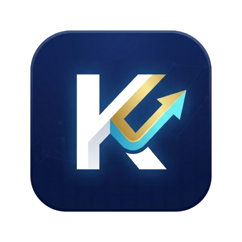
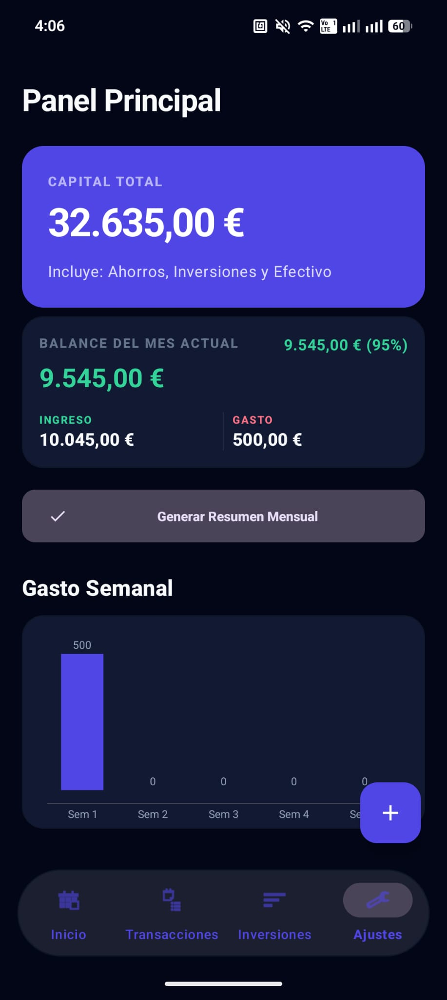
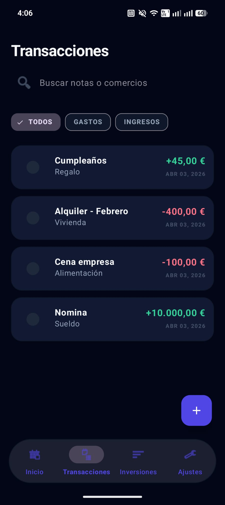
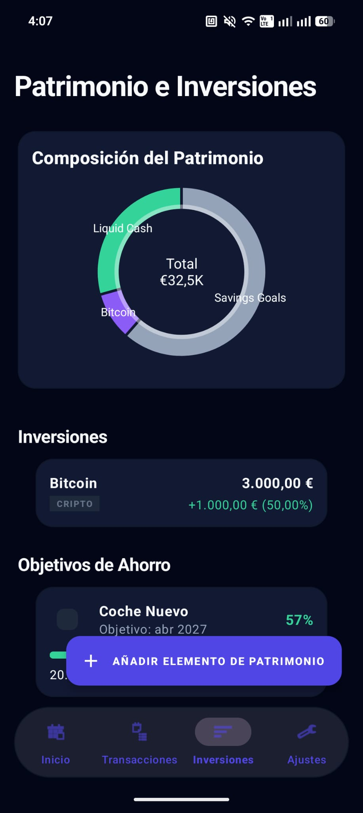
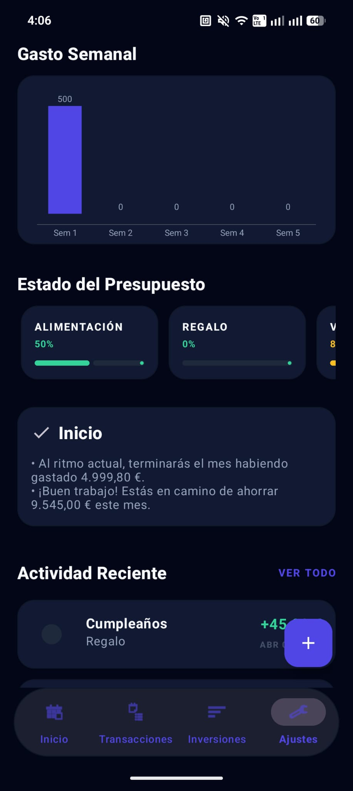

Kpital
"Your finances. One ecosystem." "Tus finanzas. Un ecosistema."
Kpital is a comprehensive personal finance and wealth management app that connects daily spending with long-term investments. Understand your financial health in a single, unified platform. Kpital es una aplicación integral de finanzas personales y gestión patrimonial que conecta el gasto diario con inversiones a largo plazo. Entiende tu salud financiera en una sola plataforma unificada.
Explore the App Explorar la AppKpital stands out by combining budgeting and investment tracking into a single ecosystem. It allows users to understand how daily financial habits impact long-term wealth. With Smart Insights, it evolves from a passive tracker into an active financial assistant. Kpital destaca al combinar el seguimiento de presupuestos e inversiones en un solo ecosistema. Permite a los usuarios comprender cómo los hábitos financieros diarios impactan su riqueza a largo plazo. Con Smart Insights, evoluciona de un rastreador pasivo a un asistente financiero activo.
Key Features Características Principales
Holistic Dashboard Panel Holístico
Get a bird's-eye view of your net worth, comparing total assets against current expenses in real-time. Obtén una vista panorámica de tu patrimonio neto, comparando activos totales con gastos actuales en tiempo real.
Transaction Tracking Seguimiento de Transacciones
Effortlessly log income and expenses. Categorize every transaction to maintain strict budget awareness. Registra ingresos y gastos sin esfuerzo. Categoriza cada transacción para mantener un estricto control de presupuesto.
Investment Portfolio Cartera de Inversiones
Track your stocks, crypto, and other investments. See market trends and portfolio growth organically. Haz seguimiento de tus acciones, criptomonedas y otras inversiones. Observa las tendencias del mercado y el crecimiento orgánico de tu cartera.
Smart Financial Insights Perspectivas Financieras
Receive actionable notifications and data-driven tips to optimize your spending and increase savings. Recibe notificaciones prácticas y consejos basados en datos para optimizar tu gasto y aumentar tus ahorros.
Savings Goals Objetivos de Ahorro
Set specific financial milestones and visually track your progress towards purchasing a home, a car, or an emergency fund. Establece metas financieras específicas y realiza un seguimiento visual de tu progreso para comprar una casa, un vehículo o crear un fondo de emergencia.
Real-time Sync Sincronización en Tiempo Real
Powered by Firebase, your data is instantaneously synced and securely backed up in the cloud. Impulsado por Firebase, tus datos se sincronizan instantáneamente y se respaldan de forma segura en la nube.
Inside The App Dentro de La App




Built With Modern Tech Construido Con Tecnología Moderna
Clean Architecture Arquitectura Limpia
Domain Layer Capa de Dominio
Contains the core business logic, use cases, and abstract data interfaces isolated from framework dependencies. Contiene la lógica de negocio central, casos de uso e interfaces de datos aisladas de frameworks externos.
Data Layer Capa de Datos
Manages data retrieval, repository implementations, and direct communication with Firebase and local caches. Maneja la recuperación de datos, implementación de repositorios y comunicación directa con Firebase y cachés locales.
UI Layer Capa de Interfaz
Handles the Android UI and interactions using ViewModels, LiveData, and modern Jetpack components. Gestiona la interfaz de Android y sus interacciones utilizando ViewModels, LiveData y componentes modernos de Jetpack.
Ready to take control? ¿Listo para tomar el control?
Download the app and start shaping your financial future today. Descarga la app y comienza a dar forma a tu futuro financiero hoy mismo.